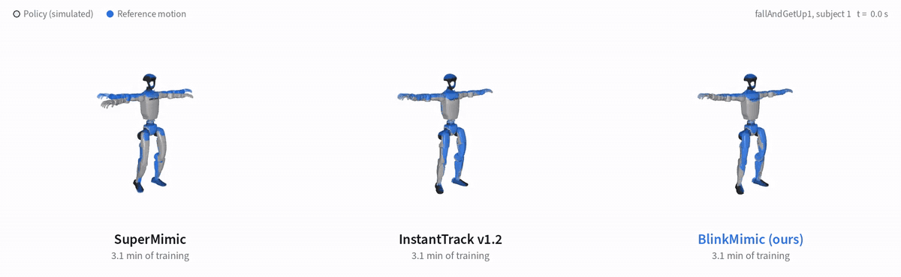
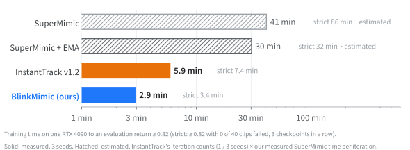
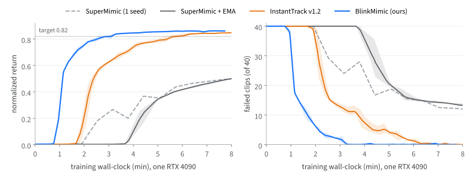

BlinkMimic
Whole-body motion tracking for the Unitree G1 in about 3 minutes on one GPU.

fallAndGetUp1_subject1: the first 8 s, then 30–42 s. Blue ghost: reference motion. A faded panel has fallen.on all 40 LAFAN1 clips
3 checkpoints in a row
on the same GPU (5.9 min)
One policy, 40 clips, one RTX 4090
BlinkMimic trains a single tracking policy for all 40 LAFAN1 clips (2.45 h of motion) on the Unitree G1. Like SuperMimic and InstantTrack, it learns one differentiable world model and backpropagates the policy through imagined rollouts. BlinkMimic changes how the policy is optimized and where the simulator spends its resets.

Equal training time
Mean return / failed clips (of 40) at the last checkpoint within each budget, all four methods trained on the same GPU.
| method | seeds | 3.1 min | 4.5 min | 7.8 min |
|---|---|---|---|---|
| SuperMimic | 1 | 0.179 / 29.2 | 0.367 / 16.8 | 0.495 / 12.2 |
| SuperMimic + EMA | 3 | 0.002 / 40 | 0.231 / 28.9 | 0.480 / 14.0 |
| InstantTrack v1.2 | 3 | 0.639 / 12.3 | 0.767 / 5.0 | 0.846 / 0.1 |
| BlinkMimic | 3 | 0.821 / 1.5 | 0.851 / 0 | 0.861 / 0 |

What changes
Compared with InstantTrack v1.2, BlinkMimic keeps Muon, the CUDA-graph updates and the reference-based action, and adds:
Resets where the policy fails
Every 125 iterations the deployed policy is swept over all clips under evaluation conditions; 15% of the resets go to the 10 s before each failure.
Large policy batch, early
Policy batch 2048 with a 4× learning rate, decayed once the training return reaches 0.75.
Semi-implicit world model
The world model predicts velocity increments and integrates positions; half of each batch is mirrored left-right.
No idle GPU time
Collection, resets and the probe sweep also run as CUDA graphs; the sweep runs on a side stream next to training.
BlinkMimic is 6% cheaper per iteration than InstantTrack v1.2 and needs about half the iterations. Full list in the README.
Citation
@misc{blinkmimic2026,
title = {BlinkMimic: Whole-Body Motion Tracking for the Unitree G1 in Minutes on One GPU},
author = {Chen, Fuyi},
year = {2026},
url = {https://github.com/fuyichen0725/blinkmimic}
}
Please also cite the works it builds on (BibTeX in the README).